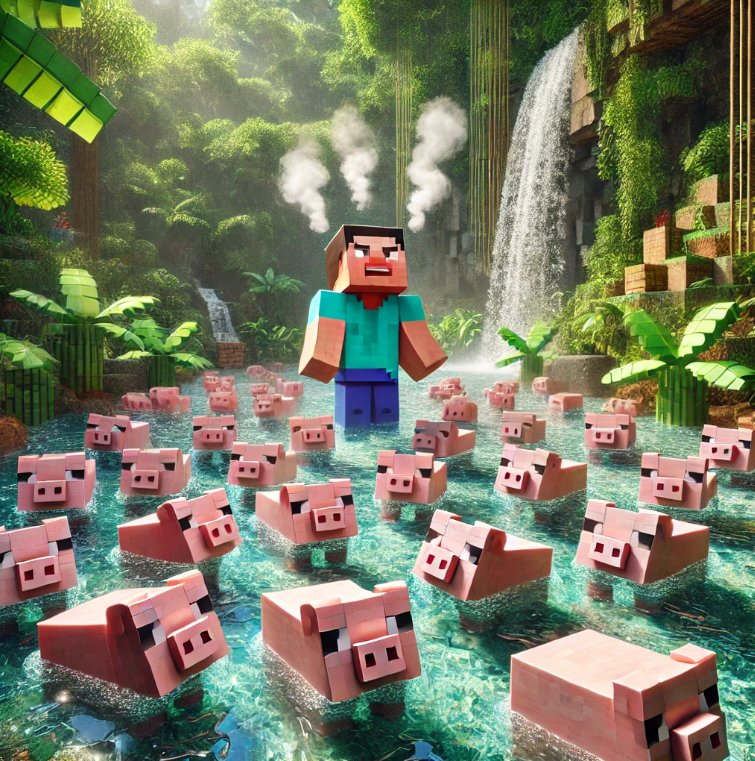

I am honored to be a part of the pig by steve CTO. If you are an active user of the Solana blockchain; you have been rugged before. Personally, being rug pulled in the past has motivated me to do the right thing always. Despite that, I have never been fond of thievery.
One thing that I appreciate about pumpfun tokens is that they are unmintable with ownership renounced. This gives anyone a great opportunity given the right circumstances, to step up to the plate and fight for their favorite memecoins. That is why I am here, because this minecraft pig is so memerific, that I want to see it flying in the clouds.
This website development is an example of my contribution to the PIG CTO. I am a general designer with a variety of skills such as video editing, graphic design and more. Aside from that it is my main interest to create deflationary protocols and tokenomics for PIG (potentially during the bear market)
